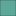

<!doctype html>
<html lang="en">
    <head>
        <meta charset="utf-8">
        <meta http-equiv="X-UA-Compatible" content="IE=edge">
        <meta name="viewport" content="initial-scale=1,user-scalable=no,maximum-scale=1,width=device-width">
        <meta name="mobile-web-app-capable" content="yes">
        <meta name="apple-mobile-web-app-capable" content="yes">
        <link rel="stylesheet" href="css/leaflet.css">
        <link rel="stylesheet" href="css/L.Control.Layers.Tree.css">
        <link rel="stylesheet" href="css/L.Control.Locate.min.css">
        <link rel="stylesheet" href="css/qgis2web.css">
        <link rel="stylesheet" href="css/fontawesome-all.min.css">
        <style>
        html, body, #map {
            width: 100%;
            height: 100%;
            padding: 0;
            margin: 0;
        }
        </style>
        <title></title>
    </head>
    <body>
        <div id="map">
        </div>
        <script src="js/qgis2web_expressions.js"></script>
        <script src="js/leaflet.js"></script>
        <script src="js/L.Control.Layers.Tree.min.js"></script>
        <script src="js/L.Control.Locate.min.js"></script>
        <script src="js/leaflet-svg-shape-markers.min.js"></script>
        <script src="js/leaflet.rotatedMarker.js"></script>
        <script src="js/leaflet.pattern.js"></script>
        <script src="js/leaflet-hash.js"></script>
        <script src="js/Autolinker.min.js"></script>
        <script src="js/rbush.min.js"></script>
        <script src="js/labelgun.min.js"></script>
        <script src="js/labels.js"></script>
        <script src="data/Background_2.js"></script>
        <script src="data/NearNorthNeighborhood_3.js"></script>
        <script src="data/Parks_4.js"></script>
        <script src="data/PointsofInterest_5.js"></script>
        <script src="data/HistoricLandmarks_6.js"></script>
        <script>
        var map = L.map('map', {
            zoomControl:false, maxZoom:28, minZoom:1
        }).fitBounds([[47.92151116452133,-97.05940279449474],[47.933660308478004,-97.01717042807532]]);
        var hash = new L.Hash(map);
        map.attributionControl.setPrefix('<a href="https://github.com/tomchadwin/qgis2web" target="_blank">qgis2web</a> &middot; <a href="https://leafletjs.com" title="A JS library for interactive maps">Leaflet</a> &middot; <a href="https://qgis.org">QGIS</a>');
        var autolinker = new Autolinker({truncate: {length: 30, location: 'smart'}});
        // remove popup's row if "visible-with-data"
        function removeEmptyRowsFromPopupContent(content, feature) {
         var tempDiv = document.createElement('div');
         tempDiv.innerHTML = content;
         var rows = tempDiv.querySelectorAll('tr');
         for (var i = 0; i < rows.length; i++) {
             var td = rows[i].querySelector('td.visible-with-data');
             var key = td ? td.id : '';
             if (td && td.classList.contains('visible-with-data') && feature.properties[key] == null) {
                 rows[i].parentNode.removeChild(rows[i]);
             }
         }
         return tempDiv.innerHTML;
        }
        // add class to format popup if it contains media
		function addClassToPopupIfMedia(content, popup) {
			var tempDiv = document.createElement('div');
			tempDiv.innerHTML = content;
			if (tempDiv.querySelector('td img')) {
				popup._contentNode.classList.add('media');
					// Delay to force the redraw
					setTimeout(function() {
						popup.update();
					}, 10);
			} else {
				popup._contentNode.classList.remove('media');
			}
		}
        var zoomControl = L.control.zoom({
            position: 'topleft'
        }).addTo(map);
        L.control.locate({locateOptions: {maxZoom: 19}}).addTo(map);
        var bounds_group = new L.featureGroup([]);
        function setBounds() {
        }
        map.createPane('pane_GoogleSatellite_0');
        map.getPane('pane_GoogleSatellite_0').style.zIndex = 400;
        var layer_GoogleSatellite_0 = L.tileLayer('https://mt1.google.com/vt/lyrs=s&x={x}&y={y}&z={z}', {
            pane: 'pane_GoogleSatellite_0',
            opacity: 1.0,
            attribution: '',
            minZoom: 1,
            maxZoom: 28,
            minNativeZoom: 0,
            maxNativeZoom: 19
        });
        layer_GoogleSatellite_0;
        map.addLayer(layer_GoogleSatellite_0);
        map.createPane('pane_StreetView_1');
        map.getPane('pane_StreetView_1').style.zIndex = 401;
        var layer_StreetView_1 = L.tileLayer('http://basemaps.cartocdn.com/light_all/{z}/{x}/{y}.png', {
            pane: 'pane_StreetView_1',
            opacity: 1.0,
            attribution: '',
            minZoom: 1,
            maxZoom: 28,
        });
        layer_StreetView_1;
        map.addLayer(layer_StreetView_1);
        function pop_Background_2(feature, layer) {
            var popupContent = '<table>\
                    <tr>\
                        <td colspan="2">' + (feature.properties['OBJECTID'] !== null ? autolinker.link(String(feature.properties['OBJECTID']).replace(/'/g, '\'').replace(/"/g, '&quot;').toLocaleString()) : '') + '</td>\
                    </tr>\
                    <tr>\
                        <td colspan="2">' + (feature.properties['Id'] !== null ? autolinker.link(String(feature.properties['Id']).replace(/'/g, '\'').replace(/"/g, '&quot;').toLocaleString()) : '') + '</td>\
                    </tr>\
                    <tr>\
                        <td colspan="2">' + (feature.properties['Shape_Length'] !== null ? autolinker.link(String(feature.properties['Shape_Length']).replace(/'/g, '\'').replace(/"/g, '&quot;').toLocaleString()) : '') + '</td>\
                    </tr>\
                    <tr>\
                        <td colspan="2">' + (feature.properties['Shape_Area'] !== null ? autolinker.link(String(feature.properties['Shape_Area']).replace(/'/g, '\'').replace(/"/g, '&quot;').toLocaleString()) : '') + '</td>\
                    </tr>\
                </table>';
            var content = removeEmptyRowsFromPopupContent(popupContent, feature);
			layer.on('popupopen', function(e) {
				addClassToPopupIfMedia(content, e.popup);
			});
			layer.bindPopup(content, { maxHeight: 400 });
        }

        function style_Background_2_0() {
            return {
                pane: 'pane_Background_2',
                opacity: 1,
                color: 'rgba(35,35,35,0.0)',
                dashArray: '',
                lineCap: 'butt',
                lineJoin: 'miter',
                weight: 4.0, 
                fill: true,
                fillOpacity: 1,
                fillColor: 'rgba(103,98,98,0.596078431372549)',
                interactive: true,
            }
        }
        map.createPane('pane_Background_2');
        map.getPane('pane_Background_2').style.zIndex = 402;
        map.getPane('pane_Background_2').style['mix-blend-mode'] = 'normal';
        var layer_Background_2 = new L.geoJson(json_Background_2, {
            attribution: '',
            interactive: true,
            dataVar: 'json_Background_2',
            layerName: 'layer_Background_2',
            pane: 'pane_Background_2',
            onEachFeature: pop_Background_2,
            style: style_Background_2_0,
        });
        bounds_group.addLayer(layer_Background_2);
        function pop_NearNorthNeighborhood_3(feature, layer) {
            var popupContent = '<table>\
                    <tr>\
                        <td colspan="2">' + (feature.properties['Shape_Length'] !== null ? autolinker.link(String(feature.properties['Shape_Length']).replace(/'/g, '\'').replace(/"/g, '&quot;').toLocaleString()) : '') + '</td>\
                    </tr>\
                </table>';
            var content = removeEmptyRowsFromPopupContent(popupContent, feature);
			layer.on('popupopen', function(e) {
				addClassToPopupIfMedia(content, e.popup);
			});
			layer.bindPopup(content, { maxHeight: 400 });
        }

        function style_NearNorthNeighborhood_3_0() {
            return {
                pane: 'pane_NearNorthNeighborhood_3',
                opacity: 1,
                color: 'rgba(35,35,35,1.0)',
                dashArray: '',
                lineCap: 'butt',
                lineJoin: 'miter',
                weight: 8.0, 
                fill: true,
                fillOpacity: 1,
                fillColor: 'rgba(0,0,255,0.0)',
                interactive: true,
            }
        }
        map.createPane('pane_NearNorthNeighborhood_3');
        map.getPane('pane_NearNorthNeighborhood_3').style.zIndex = 403;
        map.getPane('pane_NearNorthNeighborhood_3').style['mix-blend-mode'] = 'normal';
        var layer_NearNorthNeighborhood_3 = new L.geoJson(json_NearNorthNeighborhood_3, {
            attribution: '',
            interactive: true,
            dataVar: 'json_NearNorthNeighborhood_3',
            layerName: 'layer_NearNorthNeighborhood_3',
            pane: 'pane_NearNorthNeighborhood_3',
            onEachFeature: pop_NearNorthNeighborhood_3,
            style: style_NearNorthNeighborhood_3_0,
        });
        bounds_group.addLayer(layer_NearNorthNeighborhood_3);
        function pop_Parks_4(feature, layer) {
            var popupContent = '<table>\
                    <tr>\
                        <td colspan="2"><strong>Name</strong><br />' + (feature.properties['Name'] !== null ? autolinker.link(String(feature.properties['Name']).replace(/'/g, '\'').replace(/"/g, '&quot;').toLocaleString()) : '') + '</td>\
                    </tr>\
                </table>';
            var content = removeEmptyRowsFromPopupContent(popupContent, feature);
			layer.on('popupopen', function(e) {
				addClassToPopupIfMedia(content, e.popup);
			});
			layer.bindPopup(content, { maxHeight: 400 });
        }

        function style_Parks_4_0() {
            return {
                pane: 'pane_Parks_4',
                opacity: 1,
                color: 'rgba(35,35,35,1.0)',
                dashArray: '',
                lineCap: 'butt',
                lineJoin: 'miter',
                weight: 1, 
                fill: true,
                fillOpacity: 1,
                fillColor: 'rgba(93,168,153,1.0)',
                interactive: true,
            }
        }
        map.createPane('pane_Parks_4');
        map.getPane('pane_Parks_4').style.zIndex = 404;
        map.getPane('pane_Parks_4').style['mix-blend-mode'] = 'normal';
        var layer_Parks_4 = new L.geoJson(json_Parks_4, {
            attribution: '',
            interactive: true,
            dataVar: 'json_Parks_4',
            layerName: 'layer_Parks_4',
            pane: 'pane_Parks_4',
            onEachFeature: pop_Parks_4,
            style: style_Parks_4_0,
        });
        bounds_group.addLayer(layer_Parks_4);
        map.addLayer(layer_Parks_4);
        function pop_PointsofInterest_5(feature, layer) {
            var popupContent = '<table>\
                    <tr>\
                        <td colspan="2"><strong>ADDRESS</strong><br />' + (feature.properties['ADDRESS'] !== null ? autolinker.link(String(feature.properties['ADDRESS']).replace(/'/g, '\'').replace(/"/g, '&quot;').toLocaleString()) : '') + '</td>\
                    </tr>\
                    <tr>\
                        <td colspan="2"><strong>Name</strong><br />' + (feature.properties['Name'] !== null ? autolinker.link(String(feature.properties['Name']).replace(/'/g, '\'').replace(/"/g, '&quot;').toLocaleString()) : '') + '</td>\
                    </tr>\
                    <tr>\
                        <td colspan="2"><strong>Category</strong><br />' + (feature.properties['Category'] !== null ? autolinker.link(String(feature.properties['Category']).replace(/'/g, '\'').replace(/"/g, '&quot;').toLocaleString()) : '') + '</td>\
                    </tr>\
                </table>';
            var content = removeEmptyRowsFromPopupContent(popupContent, feature);
			layer.on('popupopen', function(e) {
				addClassToPopupIfMedia(content, e.popup);
			});
			layer.bindPopup(content, { maxHeight: 400 });
        }

        function style_PointsofInterest_5_0(feature) {
            switch(String(feature.properties['Category'])) {
                case 'Child & Health Care':
                    return {
                pane: 'pane_PointsofInterest_5',
                radius: 12.0,
                opacity: 1,
                color: 'rgba(0,0,0,1.0)',
                dashArray: '',
                lineCap: 'butt',
                lineJoin: 'miter',
                weight: 2.0,
                fill: true,
                fillOpacity: 1,
                fillColor: 'rgba(255,95,0,1.0)',
                interactive: true,
            }
                    break;
                case 'Food & Drink':
                    return {
                pane: 'pane_PointsofInterest_5',
                radius: 12.0,
                opacity: 1,
                color: 'rgba(35,35,35,1.0)',
                dashArray: '',
                lineCap: 'butt',
                lineJoin: 'miter',
                weight: 2.0,
                fill: true,
                fillOpacity: 1,
                fillColor: 'rgba(91,142,253,1.0)',
                interactive: true,
            }
                    break;
                case 'Retail':
                    return {
                pane: 'pane_PointsofInterest_5',
                radius: 12.0,
                opacity: 1,
                color: 'rgba(35,35,35,1.0)',
                dashArray: '',
                lineCap: 'butt',
                lineJoin: 'miter',
                weight: 2.0,
                fill: true,
                fillOpacity: 1,
                fillColor: 'rgba(114,93,239,1.0)',
                interactive: true,
            }
                    break;
                case 'Schools & Churches':
                    return {
                pane: 'pane_PointsofInterest_5',
                radius: 12.0,
                opacity: 1,
                color: 'rgba(35,35,35,1.0)',
                dashArray: '',
                lineCap: 'butt',
                lineJoin: 'miter',
                weight: 2.0,
                fill: true,
                fillOpacity: 1,
                fillColor: 'rgba(221,33,125,1.0)',
                interactive: true,
            }
                    break;
                case 'Services':
                    return {
                pane: 'pane_PointsofInterest_5',
                radius: 12.0,
                opacity: 1,
                color: 'rgba(35,35,35,1.0)',
                dashArray: '',
                lineCap: 'butt',
                lineJoin: 'miter',
                weight: 2.0,
                fill: true,
                fillOpacity: 1,
                fillColor: 'rgba(255,176,13,1.0)',
                interactive: true,
            }
                    break;
            }
        }
        map.createPane('pane_PointsofInterest_5');
        map.getPane('pane_PointsofInterest_5').style.zIndex = 405;
        map.getPane('pane_PointsofInterest_5').style['mix-blend-mode'] = 'normal';
        var layer_PointsofInterest_5 = new L.geoJson(json_PointsofInterest_5, {
            attribution: '',
            interactive: true,
            dataVar: 'json_PointsofInterest_5',
            layerName: 'layer_PointsofInterest_5',
            pane: 'pane_PointsofInterest_5',
            onEachFeature: pop_PointsofInterest_5,
            pointToLayer: function (feature, latlng) {
                var context = {
                    feature: feature,
                    variables: {}
                };
                return L.circleMarker(latlng, style_PointsofInterest_5_0(feature));
            },
        });
        bounds_group.addLayer(layer_PointsofInterest_5);
        map.addLayer(layer_PointsofInterest_5);
        function pop_HistoricLandmarks_6(feature, layer) {
            var popupContent = '<table>\
                    <tr>\
                        <td class="visible-with-data" id="ADDRESS" colspan="2"><strong>ADDRESS</strong><br />' + (feature.properties['ADDRESS'] !== null ? autolinker.link(String(feature.properties['ADDRESS']).replace(/'/g, '\'').replace(/"/g, '&quot;').toLocaleString()) : '') + '</td>\
                    </tr>\
                    <tr>\
                        <td class="visible-with-data" id="Name" colspan="2"><strong>Name</strong><br />' + (feature.properties['Name'] !== null ? autolinker.link(String(feature.properties['Name']).replace(/'/g, '\'').replace(/"/g, '&quot;').toLocaleString()) : '') + '</td>\
                    </tr>\
                    <tr>\
                        <td class="visible-with-data" id="NRHP" colspan="2"><strong>NRHP</strong><br />' + (feature.properties['NRHP'] !== null ? autolinker.link(String(feature.properties['NRHP']).replace(/'/g, '\'').replace(/"/g, '&quot;').toLocaleString()) : '') + '</td>\
                    </tr>\
                </table>';
            var content = removeEmptyRowsFromPopupContent(popupContent, feature);
			layer.on('popupopen', function(e) {
				addClassToPopupIfMedia(content, e.popup);
			});
			layer.bindPopup(content, { maxHeight: 400 });
        }

        function style_HistoricLandmarks_6_0() {
            return {
                pane: 'pane_HistoricLandmarks_6',
                shape: 'diamond',
                radius: 10.0,
                opacity: 1,
                color: 'rgba(128,17,25,1.0)',
                dashArray: '',
                lineCap: 'butt',
                lineJoin: 'miter',
                weight: 2.0,
                fill: true,
                fillOpacity: 1,
                fillColor: 'rgba(194,106,119,1.0)',
                interactive: true,
            }
        }
        map.createPane('pane_HistoricLandmarks_6');
        map.getPane('pane_HistoricLandmarks_6').style.zIndex = 406;
        map.getPane('pane_HistoricLandmarks_6').style['mix-blend-mode'] = 'normal';
        var layer_HistoricLandmarks_6 = new L.geoJson(json_HistoricLandmarks_6, {
            attribution: '',
            interactive: true,
            dataVar: 'json_HistoricLandmarks_6',
            layerName: 'layer_HistoricLandmarks_6',
            pane: 'pane_HistoricLandmarks_6',
            onEachFeature: pop_HistoricLandmarks_6,
            pointToLayer: function (feature, latlng) {
                var context = {
                    feature: feature,
                    variables: {}
                };
                return L.shapeMarker(latlng, style_HistoricLandmarks_6_0(feature));
            },
        });
        bounds_group.addLayer(layer_HistoricLandmarks_6);
        map.addLayer(layer_HistoricLandmarks_6);
        var overlaysTree = [
            {label: ' Historic Landmarks', layer: layer_HistoricLandmarks_6},
            {label: 'Points of Interest<br /><table><tr><td style="text-align: center;"></td><td>Child & Health Care</td></tr><tr><td style="text-align: center;"></td><td>Food & Drink</td></tr><tr><td style="text-align: center;"></td><td>Retail</td></tr><tr><td style="text-align: center;"></td><td>Schools & Churches</td></tr><tr><td style="text-align: center;"></td><td>Services</td></tr></table>', layer: layer_PointsofInterest_5},
            {label: ' Parks', layer: layer_Parks_4},
            {label: ' Near North Neighborhood', layer: layer_NearNorthNeighborhood_3},
            {label: ' Background', layer: layer_Background_2},
            {label: "Street View", layer: layer_StreetView_1, radioGroup: 'bm' },
            {label: "Google Satellite", layer: layer_GoogleSatellite_0, radioGroup: 'bm' },]
        var lay = L.control.layers.tree(null, overlaysTree,{
            //namedToggle: true,
            //selectorBack: false,
            //closedSymbol: '&#8862; &#x1f5c0;',
            //openedSymbol: '&#8863; &#x1f5c1;',
            //collapseAll: 'Collapse all',
            //expandAll: 'Expand all',
            collapsed: false, 
        });
        lay.addTo(map);
		document.addEventListener("DOMContentLoaded", function() {
            // set new Layers List height which considers toggle icon
            function newLayersListHeight() {
                var layerScrollbarElement = document.querySelector('.leaflet-control-layers-scrollbar');
                if (layerScrollbarElement) {
                    var layersListElement = document.querySelector('.leaflet-control-layers-list');
                    var originalHeight = layersListElement.style.height 
                        || window.getComputedStyle(layersListElement).height;
                    var newHeight = parseFloat(originalHeight) - 50;
                    layersListElement.style.height = newHeight + 'px';
                }
            }
            var isLayersListExpanded = true;
            var controlLayersElement = document.querySelector('.leaflet-control-layers');
            var toggleLayerControl = document.querySelector('.leaflet-control-layers-toggle');
            // toggle Collapsed/Expanded and apply new Layers List height
            toggleLayerControl.addEventListener('click', function() {
                if (isLayersListExpanded) {
                    controlLayersElement.classList.remove('leaflet-control-layers-expanded');
                } else {
                    controlLayersElement.classList.add('leaflet-control-layers-expanded');
                }
                isLayersListExpanded = !isLayersListExpanded;
                newLayersListHeight()
            });	
			// apply new Layers List height if toggle layerstree
			if (controlLayersElement) {
				controlLayersElement.addEventListener('click', function(event) {
					var toggleLayerHeaderPointer = event.target.closest('.leaflet-layerstree-header-pointer span');
					if (toggleLayerHeaderPointer) {
						newLayersListHeight();
					}
				});
			}
            // Collapsed/Expanded at Start to apply new height
            setTimeout(function() {
                toggleLayerControl.click();
            }, 10);
            setTimeout(function() {
                toggleLayerControl.click();
            }, 10);
            // Collapsed touch/small screen
            var isSmallScreen = window.innerWidth < 650;
            if (isSmallScreen) {
                setTimeout(function() {
                    controlLayersElement.classList.remove('leaflet-control-layers-expanded');
                    isLayersListExpanded = !isLayersListExpanded;
                }, 500);
            }  
        });       
        setBounds();
        </script>
    </body>
</html>
